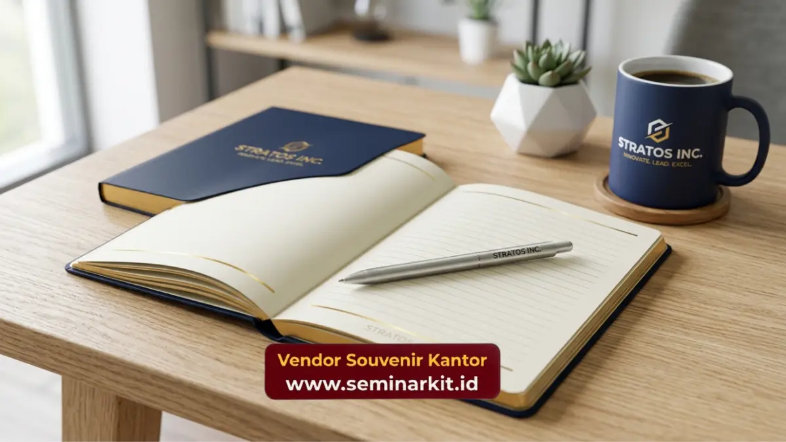

Souvenir karyawan custom logo adalah merchandise internal perusahaan yang dicetak dengan logo dan identitas visual brand, diberikan kepada karyawan sebagai bagian dari strategi branding sekaligus apresiasi kerja.
Barang ini umumnya berupa alat tulis, tumbler, tas, atau pakaian kerja dengan cetakan logo yang presisi.
Perusahaan yang membutuhkan layanan custom logo untuk souvenir karyawan dapat langsung berkonsultasi melalui vendorsouvenirkantor.web.id.
- Souvenir karyawan custom logo berfungsi ganda sebagai apresiasi kerja dan media branding internal perusahaan.
- Konsistensi visual pada merchandise membantu memperkuat identitas brand di mata karyawan maupun publik.
- Jenis produk yang umum dicetak logo meliputi tumbler, tas kerja, alat tulis, dan pakaian seragam.
- Vendorsouvenirkantor.web.id menyediakan layanan cetak logo dengan berbagai teknik sesuai jenis material produk.
Apa Itu Souvenir Karyawan Custom Logo?
Souvenir karyawan custom logo merujuk pada merchandise yang dirancang khusus dengan mencantumkan logo, tagline, atau elemen visual identitas perusahaan.
Berbeda dengan souvenir generik, produk custom logo dibuat agar selaras dengan panduan brand perusahaan, mulai dari warna, tipografi, hingga penempatan logo pada produk.
Pendekatan ini banyak digunakan perusahaan untuk memastikan setiap barang yang diterima karyawan tidak hanya berfungsi sebagai hadiah, tetapi juga menjadi representasi identitas brand yang konsisten di berbagai kesempatan, baik di dalam maupun luar lingkungan kerja.
Mengapa Custom Logo Penting untuk Merchandise Karyawan?
Penerapan custom logo pada souvenir karyawan memiliki peran strategis yang lebih luas dibandingkan sekadar aspek estetika semata.
Bagaimana Custom Logo Memperkuat Brand Recall Karyawan?
Ketika karyawan menggunakan barang berlogo perusahaan secara rutin, seperti tumbler atau tas kerja, secara tidak langsung mereka semakin terbiasa dengan identitas visual brand tersebut. Paparan berulang ini membantu memperkuat brand recall, baik bagi karyawan itu sendiri maupun bagi orang-orang di sekitarnya yang melihat produk tersebut digunakan sehari-hari.
Efek ini menjadikan souvenir custom logo sebagai media promosi pasif yang efektif, karena penyebarannya terjadi secara organik melalui aktivitas normal karyawan.
Apakah Custom Logo Meningkatkan Kesan Profesional Perusahaan?
Ya, merchandise dengan cetakan logo yang rapi dan presisi memberikan kesan bahwa perusahaan memperhatikan detail dan konsisten dalam menjaga identitas brand. Sebaliknya, hasil cetak logo yang kurang rapi justru dapat menurunkan citra profesionalisme perusahaan di mata karyawan maupun pihak eksternal yang melihatnya.

Jenis Produk yang Umum Dicetak Logo Perusahaan
Berbagai jenis produk dapat dijadikan media custom logo, tergantung kebutuhan dan karakter kerja karyawan sehari-hari.
Alat Tulis dan Perlengkapan Kerja
Produk seperti pulpen, notebook, dan flashdisk merupakan pilihan paling umum karena penggunaannya yang tinggi dalam aktivitas kerja sehari-hari. Ukuran permukaan yang cukup luas pada notebook juga memudahkan penempatan logo secara jelas dan estetis.
Tumbler dan Perlengkapan Minum
Tumbler custom logo menjadi salah satu souvenir paling populer karena fungsinya yang praktis dan dapat digunakan setiap hari, baik di kantor maupun saat bepergian, sehingga eksposur logo perusahaan menjadi lebih luas.
Tas Kerja dan Perlengkapan Mobilitas
Tas laptop, totebag, atau ransel dengan cetakan logo memberikan kesan profesional sekaligus fungsional bagi karyawan yang sering bepergian untuk kebutuhan pekerjaan. Produk ini juga sering digunakan di luar konteks kantor, sehingga memperluas jangkauan branding secara alami.
Pakaian Kerja dan Seragam Custom
Untuk kebutuhan yang lebih formal, perusahaan dapat memilih polo shirt, kemeja, atau rompi dengan bordir logo perusahaan. Jenis produk ini umumnya digunakan pada acara resmi perusahaan seperti gathering, pelatihan, atau kunjungan klien.
Souvenir karyawan custom logo merupakan investasi strategis yang menggabungkan fungsi apresiasi kerja dengan penguatan identitas brand perusahaan.
Pemilihan jenis produk yang tepat, kualitas hasil cetak logo yang presisi, dan konsistensi visual akan menentukan seberapa besar dampak branding yang dihasilkan.
Untuk mendapatkan souvenir karyawan dengan layanan custom logo profesional, kunjungi vendorsouvenirkantor.web.id dan konsultasikan kebutuhan branding perusahaan Anda sekarang.

Banner promosi: klik gambar untuk langsung terhubung ke WhatsApp tim sales.